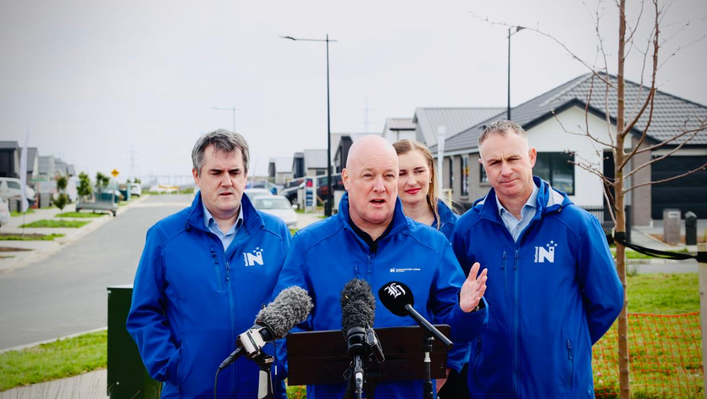

Kāinga Ora drängte darauf, den Vorwahlverkauf von leeren Wellington State Houses zu stoppen
Housing and social service organisations say the election just weeks away could dramatically change government plans.

Housing and social service organisations say the election just weeks away could dramatically change government plans.

Stelco has days to share a plan to save hundreds of Ontario steel workers from layoffs already underway — or it risks legal action from the Canadian government. The clock is ticking on what lawyers say is a test of how foreign investors are held to account as Prime Minister Mark
The Houthi attacks over the weekend marked a sharp escalation in the Yemen war, where Saudi Arabia has long supported the internationally recognised government

National has released its plan for Auckland, which it says will keep Auckland moving.
The Saudi-led coalition fighting in Yemen struck a fuel depot near the Houthi-controlled capital, Sanaa.

French public debt is projected to reach a record high of 121.7% of GDP in 2027 under the government's budget proposal, up from 119% at the end of June.

The ruling comes in the case of a Mi'kmaw man with severe mental health challenges who was sentenced in Nova Scotia to five years in prison after pleading guilty to aggravated assault against his partner, a Mi'kmaw woman.
Etwas Bestimmtes gesucht? Alle Meldungen durchsuchen.